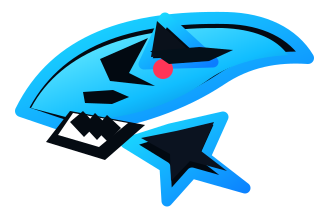

CyberShark Platform
The main CyberShark presence, built as a command deck for projects, analyst support, publications, and digital identity.
Brand anchor
CYBERSHARK Georgi SharkovCYBERSHARK / SOC IDENTITY / CYBER OCEAN
Georgi Sharkov builds SOC tooling, cyber research, and sharp web experiences under a single brand: CyberShark. The identity is built on sharp predator lines, electric blue highlights, red-alert pressure, and a security-first mindset.
PROJECT FEED
The main CyberShark presence, built as a command deck for projects, analyst support, publications, and digital identity.
Brand anchorA place for prototypes, AI work, web experiments, and code that came straight out of the neon abyss.
R&D streamATCOR / ATTCOR-CR is my active SOC-focused project, built to help analysts move from alert context to writeups, hunting queries, and handoff-ready outputs.
Open workflow previewLIVE SIGNAL
This page is designed to feel like a cyberpunk sonar sweep rather than a normal portfolio hero, shaped around Georgi Sharkov's GitHub presence, active SOC tooling, and a drive to make technical work feel sharp and memorable.
SHARK PROFILE
Georgi Sharkov uses this space as a neon front door for projects, experiments, SOC tools like ATCOR, and ongoing web builds. It is meant to feel direct, memorable, and a little dangerous, like a signal cutting through dark water.
SOC SUPPORT
Space for investigation notes, customer-facing summaries, incident write-ups, and response-ready communication templates.
Placeholder area for detection triage guidance, escalation paths, decision points, and repeatable analyst playbooks.
Reserved for analyst utilities, query ideas, helper tools, and SOC workflow improvements that will be expanded with more content.
Earned after successful completion of FOR508: Advanced Incident Response, Threat Hunting, and Digital Forensics. This coin marks hands-on DFIR achievement and reflects the ability to apply incident response, threat hunting, and forensic techniques against rapidly evolving threats.
Lethal Forensicator DFIRPUBLICATION SIGNAL
Georgi Sharkov is featured as the first Kroll Cyber Academy alum to move into the SOC, contributing to real-time threat triage, escalation, client-focused reporting, and continuous tool and workflow improvement.
Read publicationIEEE International Smart Cities Conference (ISC2), September 26, 2022. A publication focused on improving smart home security through edge computing approaches.
View IEEE publication